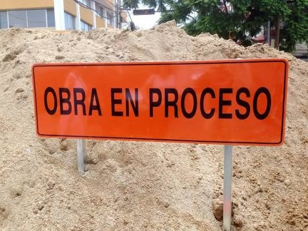

Clase 6: Recursos de diseño sonoro (Ear Candy)
Clase 6: Recursos de diseño sonoro (Ear Candy)

Lo que sigue son recetas de diseño sonoro y técnicas avanzadas para referencia. Ideal para aplicar directamente en tus producciones.
6.0.1. Acid Bass (estilo TB-303)
El sonido clásico del acid house. La base es una sierra con un filtro muy resonante que sube y baja rápido. En Strudel usamos sine.range() para mover el filtro de forma periódica. Aquí lo exageramos con .distort():
note("[c2 c2 eb2 bb1]*2").s("sawtooth")
.lpf(sine.range(100, 4000).fast(2))
.lpq(30)
.distort(0.8)
.adsr("0:0.05:0.3:0.05")
6.0.2. Reese Bass
Dos osciladores de sierra casi en la misma frecuencia, con una diferencia de unos 15 cents. Esa pequeña diferencia genera batimentos (interferencia entre las dos ondas) que dan el movimiento interno característico del jungle y el drum and bass:
stack(
note("c2*4").s("sawtooth"),
note("c2*4").s("sawtooth").detune(25)
).gain(0.6).lpf(1200).lpq(6).distort(0.4)
6.0.3. Wobble Bass
El filtro se mueve lento con un LFO y ese movimiento define el ritmo. Dubstep clásico, exagerado con más resonancia:
note("c2*4").s("sawtooth")
.lpf(sine.range(100, 3000).slow(1))
.lpq(15)
.distort(0.5)
.adsr("0:0.05:0.9:0.05")
6.0.4. Chord Stab
Un acorde con decay muy corto. Lo que le da carácter es la resonancia del filtro y que muere rápido:
note("[c3,e3,g3,bb3]*2").s("sawtooth")
.lpf(1500).lpq(12)
.adsr("0:0.03:0:0.05")
.room(0.5)
6.0.5. Supersaw
Varias sierras apiladas, cada una ligeramente desafinada respecto a la anterior. El resultado es ese sonido ancho y denso del trance y el electro. Le agregamos delay para que suene gigante:
stack(
note("c3").s("sawtooth"),
note("c3").s("sawtooth").detune(12),
note("c3").s("sawtooth").detune(-12),
note("c3").s("sawtooth").detune(24),
note("c3").s("sawtooth").detune(-24)
).gain(0.15).lpf(4000).delay(0.4).delaytime(0.25)
6.0.6. Kick sintético
Un seno grave con decay rápido. El pitch no cae en este ejemplo (para hacerlo más realista habría que modularlo con una envolvente de pitch, que requiere más código):
note("c2*4").s("sine")
.adsr("0:0.35:0:0")
.shape(0.3)
6.0.7. Percusión con ruido (snare / hi-hat)
El snare es ruido blanco con un filtro que deja pasar la parte media-alta, y un decay corto. El hi-hat es lo mismo pero más agudo y más breve:
// Snare
s("white*4").lpf(5000).adsr("0:0.12:0:0.03")
// Hi-hat
s("white*8").hpf(8000).adsr("0:0.03:0:0.01")
6.0.8. Lo-fi / Bitcrush
.crush() reduce la resolución de bits de la señal. Con valores bajos (entre 1 y 8) se consigue ese sonido degradado de consola o de cinta vieja. Boards of Canada lo usa mucho para darle esa textura de recuerdo borroso a sus pads:
note("[c3 eb3 g3]*2").s("sawtooth")
.crush(4)
.lpf(2000)
6.0.9. Growl estilo Skrillex
La diferencia con el growl básico está en .vowel(). Esta función aplica un filtro de formantes que imita la cavidad bucal al pronunciar vocales. Al pasarle un patrón de vocales, el filtro cambia de forma continua, y eso es lo que genera el movimiento de "voz que habla" del bass music más agresivo:
// FM alta + filtro de vocales modulado y distorsión
note("[c1 ~ c1 ~]*2")
.s("sawtooth")
.fm(12)
.fmh(0.5)
.vowel("<a e i o>")
.lpf(sine.range(150, 3000).slow(0.5))
.lpq(18)
.shape(0.7)
.adsr("0:0.02:0.9:0.05")
6.0.10. Risers y Downlifters (Transiciones)
Estos elementos crean tensión (risers) o liberan energía (downlifters) entre secciones. En lugar de solo subir el volumen, prueba estas técnicas poco convencionales:
// 1. Pitch Riser: Automatizar la velocidad de un sintetizador
// El pitch sube lentamente a lo largo de 4 ciclos creando mucha tensión
note("c4").s("sawtooth")
.speed(sine.range(0.5, 4).slow(4))
.lpf(sine.range(500, 5000).slow(4))
.gain(sine.slow(4))
// 2. Granular Noise Sweep (White Noise)
// Un filtro pasa-banda muy estrecho barre las frecuencias del ruido
s("white")
.bpf(sine.range(200, 10000).slow(4))
.bpq(15) // Resonancia alta para enfatizar la banda
.gain(sine.slow(4))
// 3. Reversed Crash (Downlifter / Riser)
// Tomar un platillo largo, tocarlo al revés y saturarlo
s("crash").rev().slow(4).distort(0.5).gain(1.2)
// Stutter: repetición rápida de un fragmento (efecto glitch)
note("c3*16").s("sawtooth").adsr("0:0.03:0:0").gain(0.6)
Taller de modulación avanzada (LFO)
[Pendiente de escribir - Próxima sesión]